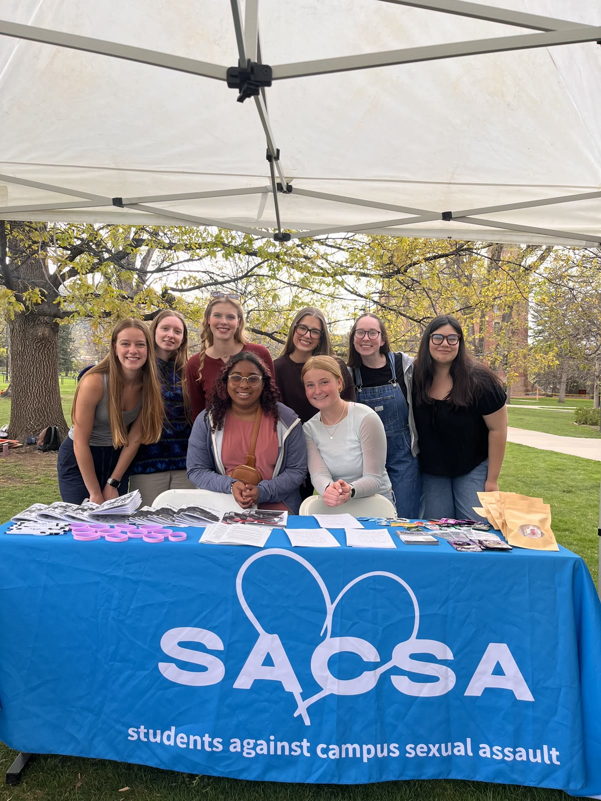
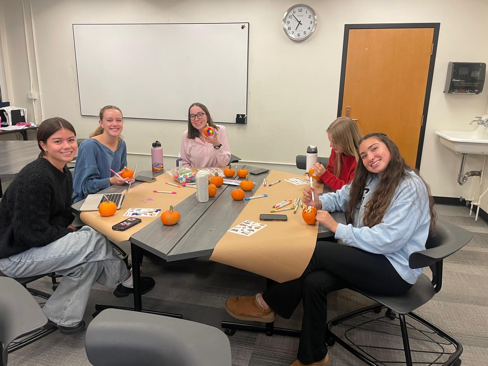

Students, for students.
SACSA is a recognized student organization at the University of Colorado Boulder, founded on a simple belief: students deserve a direct outlet to address sexual violence together.

Why SACSA was founded
We founded Students Against Campus Sexual Assault because we felt that there needed to be a direct outlet for students to collaborate with one another in addressing the issues of sexual violence.
SACSA is a student-led organization that aims to foster a community for those affected by sexual assault. We strive to provide a space for healing and productive conversations among survivors and others who are motivated to learn more about this issue.
We are a group of students who are dedicated to and connected to this cause in one way or another — and our goal is to be there for those who need it.

A space that meets you where you are
Some of what we do is loud and public — marches, tournaments, tabling around campus. Just as much of it is quiet: craft nights, movie nights, and honest conversations where you can relax knowing you are in a safe space, free to speak without fear of judgement.
You don't have to share anything. You don't have to be a survivor. You just have to care about a safer campus.
See what we're up toOur values
- Survivor-centered. Support comes first. Every event, conversation, and campaign starts from what survivors need — safety, privacy, and respect.
- Student-led. We believe students collaborating with one another is one of the most powerful forces for changing campus culture.
- Community over stigma. Sexual violence is a heavy topic that too often gets silenced. We make room for open, honest, judgement-free conversation.
- Education and action. From consent education to awareness campaigns, we pair conversation with concrete steps toward a culture of consent and accountability.
Meet the team behind SACSA
Our board members come from majors across the university — environmental studies, psychology, neuroscience, political science, and more — united by a commitment to this cause.
Meet our board